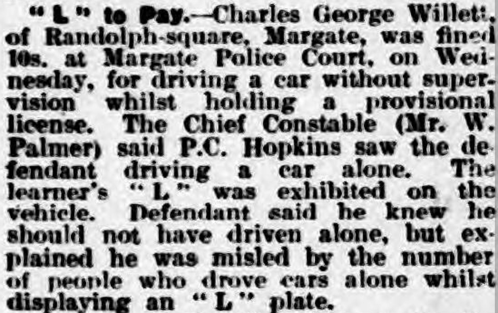
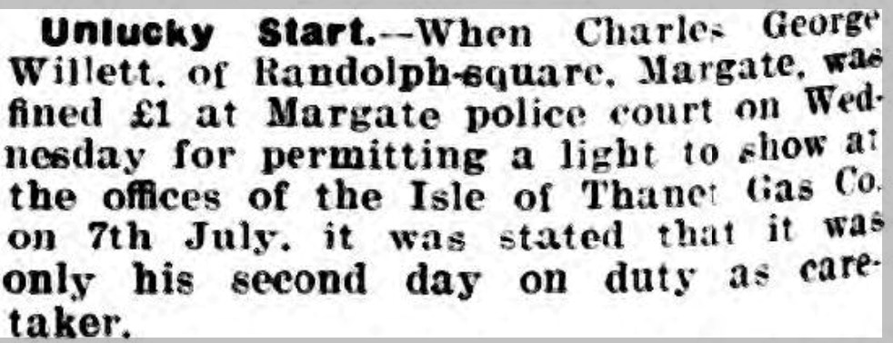

Charles George Willett 1915 - c2002
[ Home ] | [ Calendar ] | [ Surnames Index ] | [ Census Index ] | [ Family History ]Charles Willett, the husband of Joyce Catherine Spratt (the first cousin once-removed on the father's side of Nigel Horne), was born in Thanet, Kent, England on Jul 5, 19151,2 and married Joyce (with whom he had 2 children: Michael St J and Helen J, along with 1 surviving child) in Thanet around Aug 19383.
During his life, he was living at Randolph Square, Margate, Kent, England in 1935; at 3 Randolph Square in Margate in 19364; at Randolph Square in 1942; at 3 Randolph Square in Margate in 19537, in 19558 and in 19635; at 15a St Pauls Road, Cliftonville, Kent in 1965; at Flat 2, 129 Dane Road in Margate before 1965; and at 7 Gloucester Avenue, Cliftonville, Kent in 19746. In 1947 he was serving in the military (commissioned as a pilot in the RAF training branch on 4 Nov 1947. Serial number 902036).
He died c. May 2002 in Thanet2.
Children
- Michael St J was born on Jun 22, 1939
Citations
- England & Wales births 1837-2006 - Findmypast
- England & Wales deaths 1837-2007 - Findmypast
- England & Wales Marriages 1837-2005 - Findmypast
- 1963 Kelly's Thanet Directory
- 1963 Kelly's Thanet Directory
- 1974 Kelly's Thanet Directory
- 1953 Kelly's Thanet Directory
- 1955 Kelly's Thanet Directory
Media
London Gazette - 3 Feb 1948

Thanet Times - 1 Jun 1965

London Gazette - 3 Feb 1948
Thanet Advertiser - 20 Dec 1935

Thanet Advertiser 17 July 1942

1936 Isle of Thanet Kelly's Directory

1963 Kelly's Thanet Directory

1974 Kelly's Thanet Directory

1953 Kelly's Thanet Directory

1963 Kelly's Thanet Directory
1955 Kelly's Thanet Directory

England & Wales deaths 1837-2007 - BMD/D/2002/5/85273652
England & Wales births 1837-2006 - BMD/B/1915/3/AZ/001541/124
England & Wales marriages 1837-2005 - BMD/M/1938/3/AZ/001786/143
Family Tree

Generated by ged2site. Last updated on Jun 11, 2024